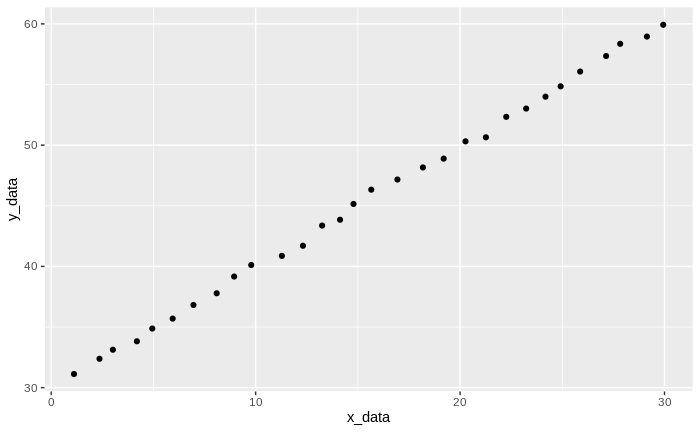

Enter Info
Data Set Name (name used in R):
X-Axis Label:
Y-Axis Label (seperate by commas for multiple response variables):
Line Color (hex value, seperate by commas for multiple response variables):
Type of Graph:
Smooth
Segment
Point
Frequency
Update Graph
Example Graph

Generated Code:
Graph only shows an example of one of the lines. Colors will not show on exampe graph. All lines will be included in code output.
ggplot(data = test_data, aes(x = x_data, y = y_data)) + geom_jitter()